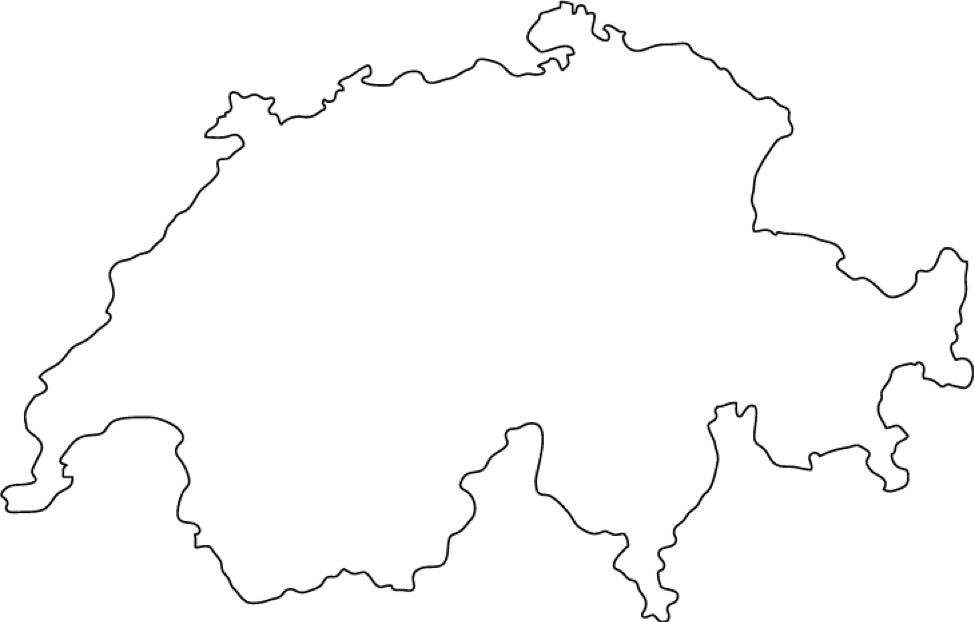
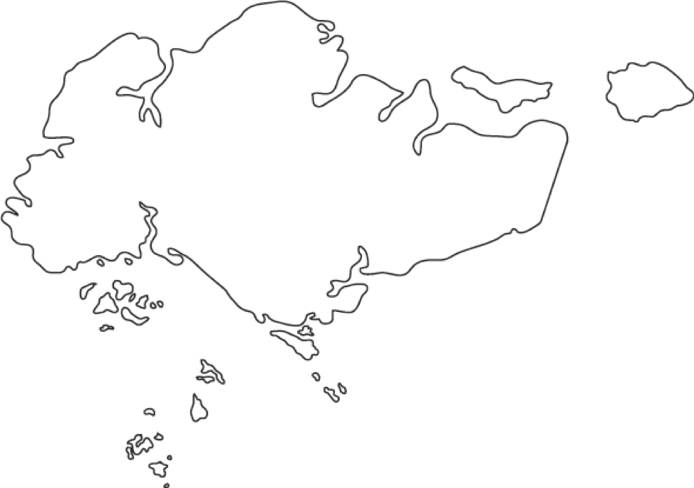
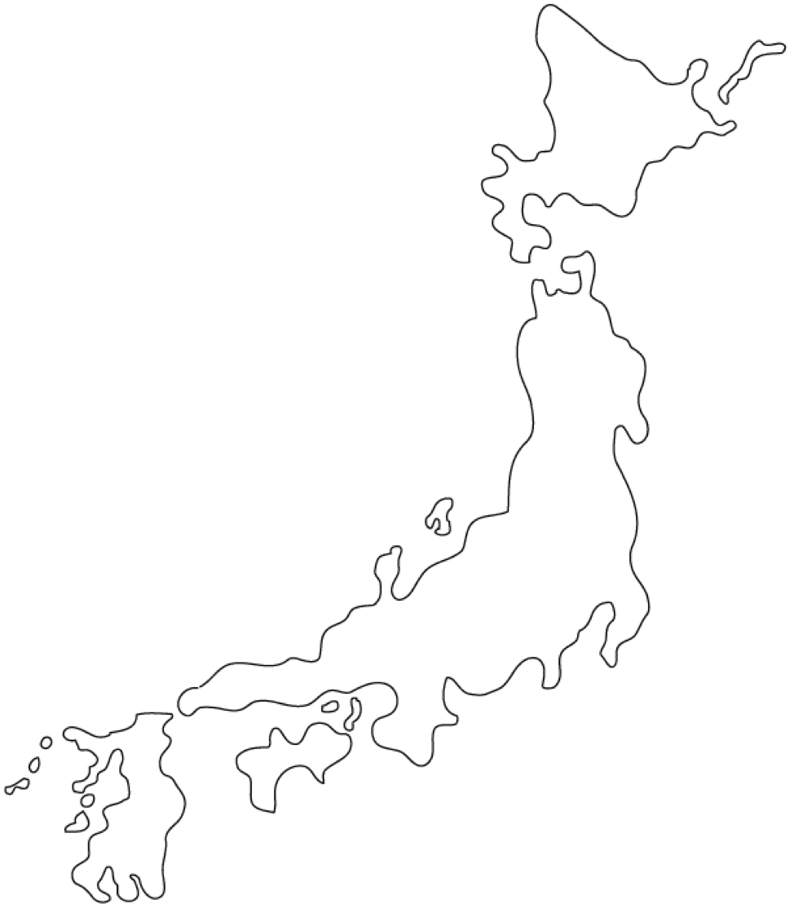

Where: Berlin, Germany
When: January 2019
Working: Researching the General Data Protection Regulation for my graduate thesis. See case study here.
Where: Tübingen, Germany
When: January 2015
Studying: Completing coursework in the History of the EU at the University of Tübingen.
Where: Seville, Spain
When: August 2015 - December 2015
Studying: Exchange student at the Universidad Pablo de Olavide.
Where: Geneva, Switzerland
When: August 2013
Where: Kolkata, India
When: June 2017 - August 2017
Studying: U.S. Department of State's Critical Lanugage Scholarship at the American Institute of Indian Studies.
Where: Singapore
When: January 2016 - May 2016
Working/Studying: Researcher and exchange student at the National University of Singapore and mental health specialist at the Humanitarian Organization for Migration Economics.
Where: Tokyo, Sendai, and Northern Japan
When: March 2015
Working: Researching after effects of the Great East Japan Earthquake and attending the UN World Conference on Disaster Risk Reduction.
Where: Dar es Salaam, Tanzania
When: June 2016 - August 2016
Working: U.S. Foreign Service internship in the U.S. Embassy, Tanzania's Political Economic Section